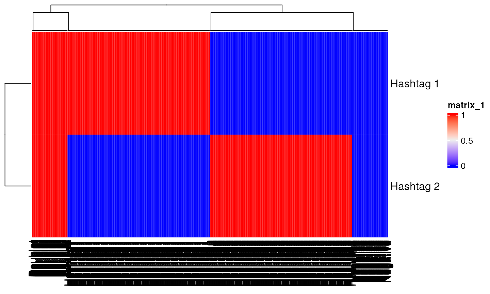
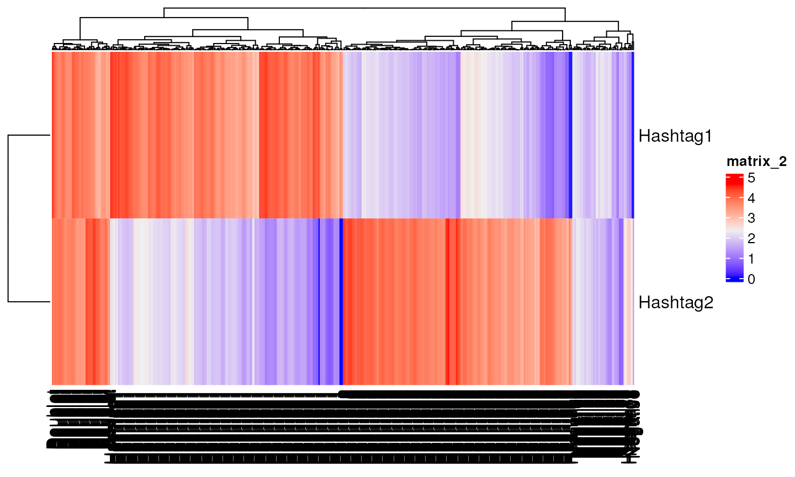
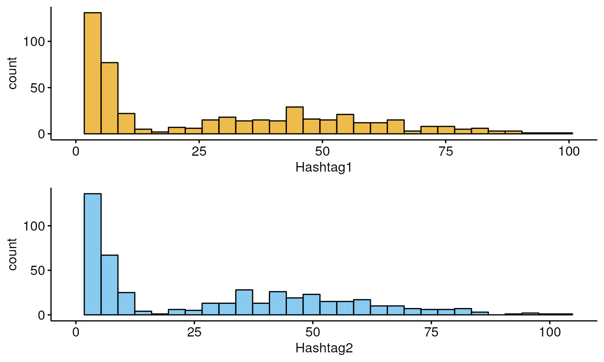
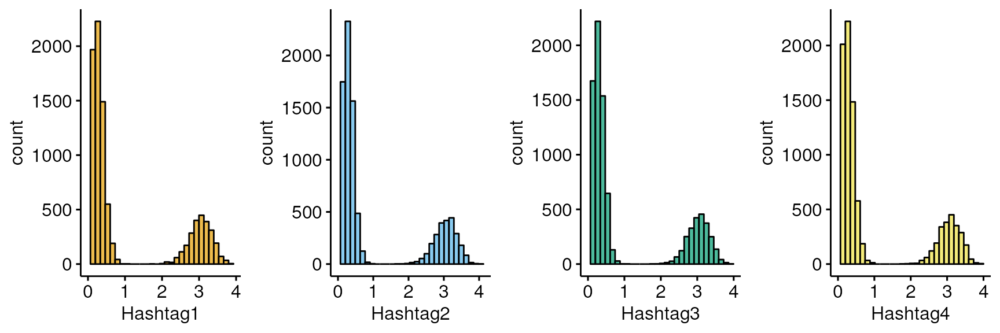
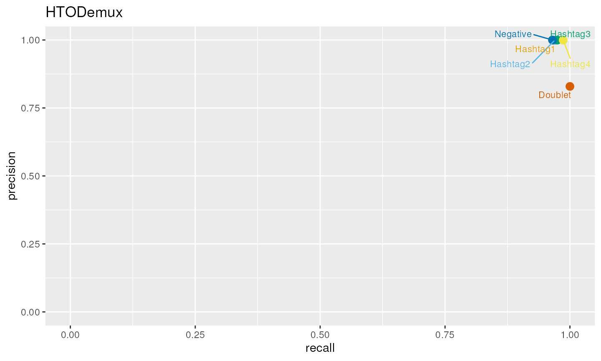
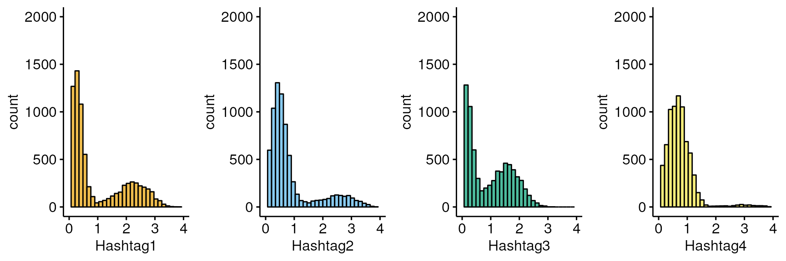
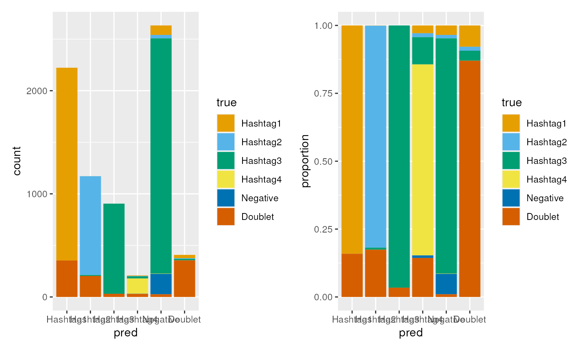

vignettes/b-hashing-benchmarking.Rmd
b-hashing-benchmarking.Rmd
library(ComplexHeatmap)
library(viridisLite)
library(ggpubr)
library(dittoSeq)
library(utils)
library(SingleCellExperiment)
library(gridExtra)
library(Seurat)
library(cellhashR)
library(ggrepel)
library(scales)
library(demultiplexingbioc23)Testing algorithms on real data is a key step to evaluating true performance. Real data includes nuances and factors which may not have been foreseen when developing the algorithm. The cost of scRNASeq means that few demultiplexing benchmarking datasets are available and often results from other demultiplexing algorithms are used as ground truth. As demultiplexing performance is closely tied to data quality and hetergenity, the few benchmarking datasets may not give a representative account of algorithm performance across the range of data quality observed in practice.
To overcome this, with the added benefit of hindsight, we simulate data to examine algorithm performance under specific conditions associated with poor hashing quality.
mat<-logimat(ngroups=2,nsinglet=c(200,200),ndoub=50,nneg=50)
library(ComplexHeatmap)
mat[1:2,1:10]
#> Hashtag1 Hashtag1 Hashtag1 Hashtag1 Hashtag1 Hashtag1 Hashtag1
#> Hashtag 1 1 1 1 1 1 1 1
#> Hashtag 2 0 0 0 0 0 0 0
#> Hashtag1 Hashtag1 Hashtag1
#> Hashtag 1 1 1 1
#> Hashtag 2 0 0 0
Heatmap(mat)
counts<-draw_counts(size_sig=10,size_bg = 10,mu_sig = rep(50,2),mu_bg = rep(5,2),mat=mat,seed=1)
counts[1:2,c(1,201,401,451)]
#> Hashtag1 Hashtag2 Doublet Negative
#> Hashtag1 46 5 50 0
#> Hashtag2 4 25 78 3
Heatmap(log(counts+1))
df<-as.data.frame(t(counts))
myplots<-plot_hashtag(df)
do.call(grid.arrange,myplots)
set.seed(1)
mu1<-600
mat<-logimat(ngroups=4,nsinglet=c(2000,2000,2000,2000),ndoub=1000,nneg=200)
counts<-draw_counts(size_sig=10,size_bg = 3.5,mu_sig = c(mu1*1,mu1*1,mu1*1,mu1*1),mu_bg = rep(10,4),mat=mat,seed=1)
hto<-SingleCellExperiment(list(counts=counts))
seurat<-CreateSeuratObject(counts=counts,assay="HTO")
#> Warning: Non-unique cell names (colnames) present in the input matrix, making
#> unique
seurat<-NormalizeData(seurat,normalization.method ="CLR")
seurat$hashtag<-as.factor(colnames(counts))
seurat<-HTODemux(seurat)
#acc<-(sum(seurat$hashtag==seurat$hash.ID))/length(seurat$hashtag)
seurat$hashtag<-factor(seurat$hashtag,levels=c("Hashtag1","Hashtag2","Hashtag3","Hashtag4","Negative","Doublet"))
groups<-levels(seurat$hashtag)
precision<-c()
recall<-c()
for (i in seq_along(groups)) {
k<-groups[i]
cond<-seurat$hashtag==k
recall[i]<-sum(seurat$hashtag[cond]==seurat$hash.ID[cond])/length(seurat$hashtag[cond])
cond<-seurat$hash.ID==k
precision[i]<-sum(seurat$hashtag[cond]==seurat$hash.ID[cond])/length(seurat$hashtag[cond])
}
groups<-factor(groups,levels=c("Hashtag1","Hashtag2","Hashtag3","Hashtag4","Negative","Doublet"))
df<-data.frame(precision,recall,groups)
#split=seurat$hashtag=="Hashtag4" & seurat$hash.ID!= "Hashtag4"
myplots<-plot_hashtag(as.data.frame(t(seurat[["HTO"]]@data)),split=NULL)
#> Warning: Using `bins = 30` by default. Pick better value with the argument
#> `bins`.
#> Warning: Using `bins = 30` by default. Pick better value with the argument
#> `bins`.
#> Warning: Using `bins = 30` by default. Pick better value with the argument
#> `bins`.
#> Warning: Using `bins = 30` by default. Pick better value with the argument
#> `bins`.
#myplots[[5]]<-xy
do.call(grid.arrange,c(myplots,nrow=1))
#> Warning: Removed 1 rows containing missing values (`geom_bar()`).
#> Warning: Removed 1 rows containing missing values (`geom_bar()`).
#> Removed 1 rows containing missing values (`geom_bar()`).
#> Removed 1 rows containing missing values (`geom_bar()`).
xy<-ggplot(df, aes(x=recall, y=precision,color=groups)) +
geom_point(show.legend = FALSE,size=3) +
scale_color_manual(values=dittoColors()[1:6]) +
geom_text_repel(aes(label=groups), size=3,show.legend = FALSE,force=10) +
scale_x_continuous(labels = label_number(accuracy = 0.01)) +
scale_y_continuous(labels = label_number(accuracy = 0.01)) +
xlim(0,1) +
ylim(0,1) + ggtitle("HTODemux")
xy ## Poor quality hashing
set.seed(1)
mu1<-400
mu2<-20
mat<-logimat(ngroups=4,nsinglet=c(2000,1000,3200,150),ndoub=1000,nneg=200)
counts<-draw_counts(size_sig=2.5,size_bg = c(2.5,2.5,2,2.5),mu_sig = c(mu1*1.2,mu1*0.9,mu1*0.7,mu1*0.9),mu_bg = c(mu2,mu2,mu2,mu2),mat=mat,seed=1)
hto<-SingleCellExperiment(list(counts=counts))
seurat<-CreateSeuratObject(counts=counts,assay="HTO")
seurat<-NormalizeData(seurat,normalization.method ="CLR")
seurat$hashtag<-as.factor(colnames(counts))
seurat<-HTODemux(seurat)
#acc<-(sum(seurat$hashtag==seurat$hash.ID))/length(seurat$hashtag)
seurat$hashtag<-factor(seurat$hashtag,levels=c("Hashtag1","Hashtag2","Hashtag3","Hashtag4","Negative","Doublet"))
groups<-levels(seurat$hashtag)
precision<-c()
recall<-c()
for (i in seq_along(groups)) {
k<-groups[i]
cond<-seurat$hashtag==k
recall[i]<-sum(seurat$hashtag[cond]==seurat$hash.ID[cond])/length(seurat$hashtag[cond])
cond<-seurat$hash.ID==k
precision[i]<-sum(seurat$hashtag[cond]==seurat$hash.ID[cond])/length(seurat$hashtag[cond])
}
groups<-factor(groups,levels=c("Hashtag1","Hashtag2","Hashtag3","Hashtag4","Negative","Doublet"))
df<-data.frame(precision,recall,groups)
#split=seurat$hashtag=="Hashtag4" & seurat$hash.ID!= "Hashtag4"
myplots<-plot_hashtag(as.data.frame(t(seurat[["HTO"]]@data)),split=NULL,xlim=c(0,4),ylim=c(0,2000))
#myplots[[5]]<-xy
do.call(grid.arrange,c(myplots,nrow=1))
xy<-ggplot(df, aes(x=recall, y=precision,color=groups)) +
geom_point(show.legend = FALSE,size=3) +
scale_color_manual(values=dittoColors()[1:6]) +
geom_text_repel(aes(label=groups), size=3,show.legend = FALSE,force=10) +
scale_x_continuous(labels = label_number(accuracy = 0.01)) +
scale_y_continuous(labels = label_number(accuracy = 0.01)) +
xlim(0,NA) +
ylim(0,NA) + ggtitle("HTODemux")
xy
df<-data.frame(true=seurat$hashtag,pred=seurat$hash.ID)
df$true<-factor(df$true,levels=c("Hashtag1","Hashtag2","Hashtag3","Hashtag4","Negative","Doublet"))
df$pred<-factor(df$pred,levels=c("Hashtag1","Hashtag2","Hashtag3","Hashtag4","Negative","Doublet"))
count<-ggplot(df, aes(fill=true,x=pred))+geom_bar() + scale_fill_manual(values=dittoColors())
prop<-ggplot(df, aes(fill=true,x=pred))+geom_bar(position="fill") + scale_fill_manual(values=dittoColors()) +ylab("proportion")
count+prop
sessionInfo()
#> R version 4.3.1 (2023-06-16)
#> Platform: x86_64-pc-linux-gnu (64-bit)
#> Running under: Ubuntu 22.04.2 LTS
#>
#> Matrix products: default
#> BLAS: /usr/lib/x86_64-linux-gnu/openblas-pthread/libblas.so.3
#> LAPACK: /usr/lib/x86_64-linux-gnu/openblas-pthread/libopenblasp-r0.3.20.so; LAPACK version 3.10.0
#>
#> locale:
#> [1] LC_CTYPE=en_US.UTF-8 LC_NUMERIC=C
#> [3] LC_TIME=en_US.UTF-8 LC_COLLATE=en_US.UTF-8
#> [5] LC_MONETARY=en_US.UTF-8 LC_MESSAGES=en_US.UTF-8
#> [7] LC_PAPER=en_US.UTF-8 LC_NAME=C
#> [9] LC_ADDRESS=C LC_TELEPHONE=C
#> [11] LC_MEASUREMENT=en_US.UTF-8 LC_IDENTIFICATION=C
#>
#> time zone: UTC
#> tzcode source: system (glibc)
#>
#> attached base packages:
#> [1] stats4 grid stats graphics grDevices utils datasets
#> [8] methods base
#>
#> other attached packages:
#> [1] demultiplexingbioc23_0.99.0 scales_1.2.1
#> [3] ggrepel_0.9.3 cellhashR_1.0.3
#> [5] SeuratObject_4.1.3 Seurat_4.3.0.1
#> [7] gridExtra_2.3 SingleCellExperiment_1.22.0
#> [9] SummarizedExperiment_1.30.2 Biobase_2.60.0
#> [11] GenomicRanges_1.52.0 GenomeInfoDb_1.36.1
#> [13] IRanges_2.34.1 S4Vectors_0.38.1
#> [15] BiocGenerics_0.46.0 MatrixGenerics_1.12.2
#> [17] matrixStats_1.0.0 dittoSeq_1.12.0
#> [19] ggpubr_0.6.0 ggplot2_3.4.2
#> [21] viridisLite_0.4.2 ComplexHeatmap_2.16.0
#>
#> loaded via a namespace (and not attached):
#> [1] RcppAnnoy_0.0.21 splines_4.3.1 later_1.3.1
#> [4] bitops_1.0-7 tibble_3.2.1 polyclip_1.10-4
#> [7] lifecycle_1.0.3 rstatix_0.7.2 doParallel_1.0.17
#> [10] rprojroot_2.0.3 globals_0.16.2 lattice_0.21-8
#> [13] MASS_7.3-60 backports_1.4.1 magrittr_2.0.3
#> [16] plotly_4.10.2 sass_0.4.7 rmarkdown_2.23
#> [19] jquerylib_0.1.4 yaml_2.3.7 httpuv_1.6.11
#> [22] sctransform_0.3.5 sp_2.0-0 spatstat.sparse_3.0-2
#> [25] reticulate_1.30 cowplot_1.1.1 pbapply_1.7-2
#> [28] RColorBrewer_1.1-3 abind_1.4-5 zlibbioc_1.46.0
#> [31] Rtsne_0.16 purrr_1.0.1 RCurl_1.98-1.12
#> [34] circlize_0.4.15 GenomeInfoDbData_1.2.10 irlba_2.3.5.1
#> [37] listenv_0.9.0 spatstat.utils_3.0-3 pheatmap_1.0.12
#> [40] goftest_1.2-3 spatstat.random_3.1-5 fitdistrplus_1.1-11
#> [43] parallelly_1.36.0 pkgdown_2.0.7 leiden_0.4.3
#> [46] codetools_0.2-19 DelayedArray_0.26.7 tidyselect_1.2.0
#> [49] shape_1.4.6 farver_2.1.1 rmdformats_1.0.4
#> [52] spatstat.explore_3.2-1 jsonlite_1.8.7 GetoptLong_1.0.5
#> [55] ellipsis_0.3.2 progressr_0.13.0 ggridges_0.5.4
#> [58] survival_3.5-5 iterators_1.0.14 systemfonts_1.0.4
#> [61] foreach_1.5.2 tools_4.3.1 ragg_1.2.5
#> [64] ica_1.0-3 Rcpp_1.0.11 glue_1.6.2
#> [67] xfun_0.39 dplyr_1.1.2 withr_2.5.0
#> [70] fastmap_1.1.1 fansi_1.0.4 digest_0.6.33
#> [73] R6_2.5.1 mime_0.12 textshaping_0.3.6
#> [76] colorspace_2.1-0 Cairo_1.6-0 scattermore_1.2
#> [79] tensor_1.5 spatstat.data_3.0-1 ggsci_3.0.0
#> [82] utf8_1.2.3 tidyr_1.3.0 generics_0.1.3
#> [85] data.table_1.14.8 httr_1.4.6 htmlwidgets_1.6.2
#> [88] S4Arrays_1.0.5 uwot_0.1.16 pkgconfig_2.0.3
#> [91] gtable_0.3.3 lmtest_0.9-40 XVector_0.40.0
#> [94] htmltools_0.5.5 carData_3.0-5 bookdown_0.34
#> [97] clue_0.3-64 png_0.1-8 knitr_1.43
#> [100] reshape2_1.4.4 rjson_0.2.21 nlme_3.1-162
#> [103] cachem_1.0.8 zoo_1.8-12 GlobalOptions_0.1.2
#> [106] stringr_1.5.0 KernSmooth_2.23-21 parallel_4.3.1
#> [109] miniUI_0.1.1.1 desc_1.4.2 pillar_1.9.0
#> [112] vctrs_0.6.3 RANN_2.6.1 promises_1.2.0.1
#> [115] car_3.1-2 xtable_1.8-4 cluster_2.1.4
#> [118] evaluate_0.21 magick_2.7.4 cli_3.6.1
#> [121] compiler_4.3.1 rlang_1.1.1 crayon_1.5.2
#> [124] future.apply_1.11.0 ggsignif_0.6.4 labeling_0.4.2
#> [127] plyr_1.8.8 fs_1.6.3 stringi_1.7.12
#> [130] deldir_1.0-9 munsell_0.5.0 lazyeval_0.2.2
#> [133] spatstat.geom_3.2-4 Matrix_1.6-0 patchwork_1.1.2
#> [136] future_1.33.0 shiny_1.7.4.1 highr_0.10
#> [139] ROCR_1.0-11 igraph_1.5.0.1 broom_1.0.5
#> [142] memoise_2.0.1 bslib_0.5.0